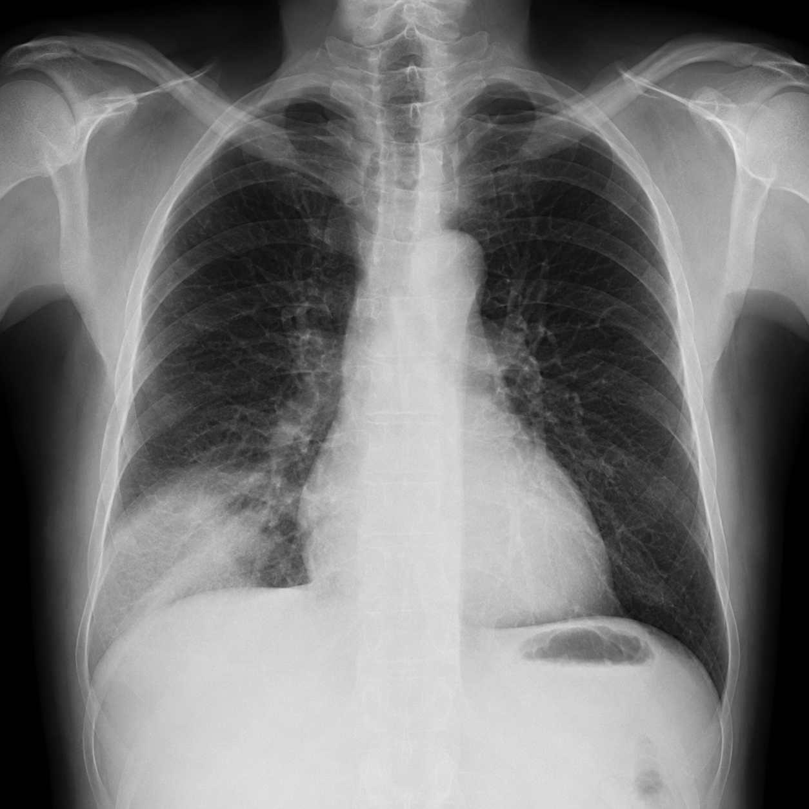
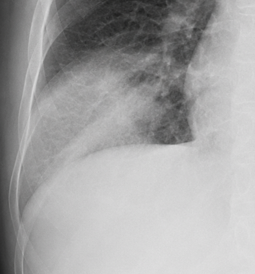

Imaging stays invisible
Text-first assistants cannot inspect a film or point to the anatomy behind a finding.
One agentic engine understands imaging, labs, documents and voice, then composes grounded outputs for physicians and patients.
Four gaps stand between what clinicians upload and what patients and doctors can safely act on.
Text-first assistants cannot inspect a film or point to the anatomy behind a finding.
Hb, WBC, and renal panels get summarized as text, not stored as data you can trend.
Generic answers ignore patient history, Malaysia MOH guidance and local priors.
Clinical language overwhelms patients; simplified output underserves doctors.
SihatAI routes any artifact into one canonical findings object, then adapts the explanation, not the evidence.
schema_valid: true
“There is a change in the lower part of your right lung. Your doctor should review it together with your symptoms.”

Patchy airspace opacity localized to the right lower zone.
Cardiothoracic ratio is mildly increased.
Community Acquired Pneumonia in Adults
[01]A clean asynchronous contract lets product engineering and model inference scale independently.
POST /analyze
signed webhook
safe_uriroute_confidencepartial_findingscitations[]ALLOW | WARNreports{}deidentify()
120 msdetect_modality()
800 msmedgemma_infer()
11.2 srag_retrieve()
900 mssafety_check()
450 mscompose(locale=bm)
3.1 s
[x, y, w, h]
Imej menunjukkan kawasan legap yang mungkin berkaitan dengan jangkitan. Dapatan ini perlu dinilai bersama gejala dan pemeriksaan doktor.
DICOM tags, document PII and metadata are scrubbed before inference.
Publish ≥ .80 · hedge .50-.80 · abstain below .50.
Structured DDx with confidence, never unsupported certainty.
Physicians inspect evidence, boxes and citations before sign-off.
reasoning accuracy
coherence + utility
policy compliance
X-rays, CT, labs, PDFs and voice all route through one pipeline. Modality detection sends each artifact to the right specialist without re-uploading.
MOH Clinical Practice Guidelines, traceable citations and a localized adapter keep every claim grounded. Reports ship in BM, EN and other local languages.
De-ID runs before inference, and confidence bands decide when to publish, hedge or abstain. Guardrails can veto unsafe output and escalate critical values.
MedGemma runs once to produce a single structured findings object. That same truth becomes a physician report and a patient-friendly summary without duplicated inference.
SihatAI combines multimodal perception, agentic reasoning, local evidence and audience-adaptive generation in one inspectable pipeline.